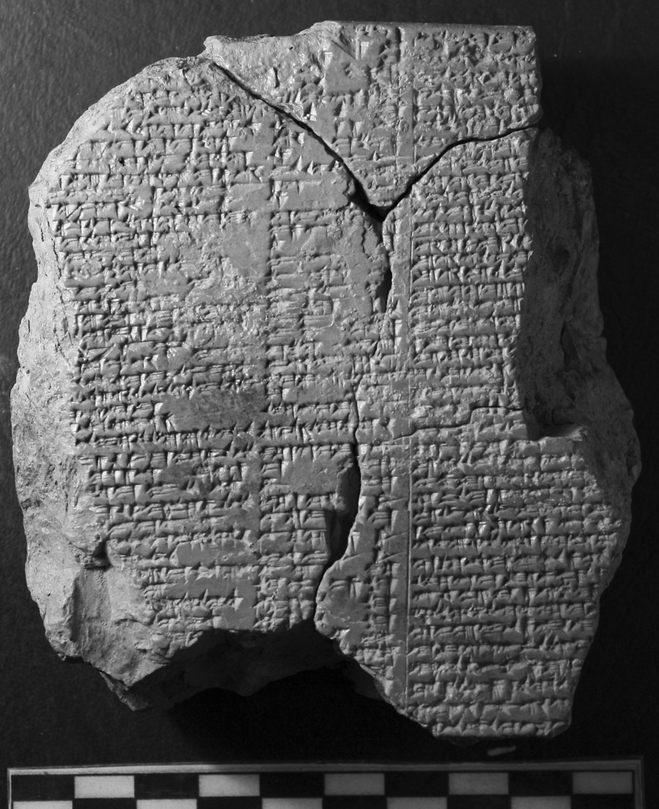
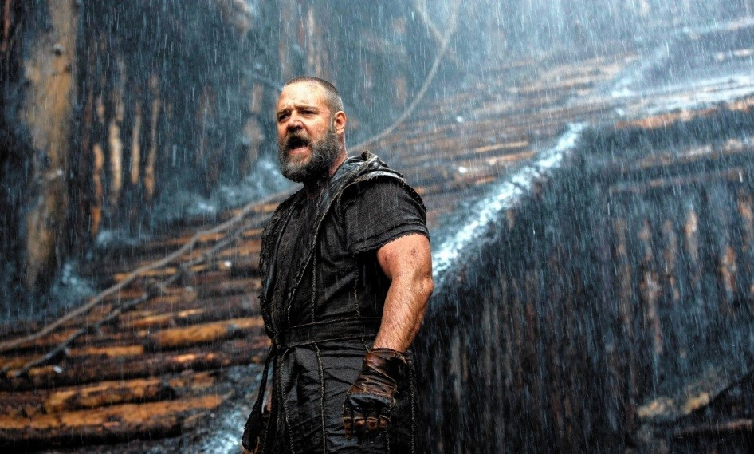

The Eternal Themes of the Epic of Gilgamesh
by Elmer Tan
Introduction – “Pick Up the Tablet of Lapis Lazuli and Read!”1

The newly discovered tablet (image from Al-Rawi and George) In 2011, Farouk Al-Rawi and Andrew George identified and discovered a new tablet inscribed with several lines of Tablet V of the Standard Version of the Epic of Gilgamesh (Al-Rawi and George 2014), filling lacunae at the start and end of the tablet. Reports of this discovery have only recently surfaced in mainstream media, reinvigorating discussion surrounding Ancient Mesopotamia and its culture.
1I 27In the wake of this discovery and announcement are left many wondering as to whether there can possibly be any relevance to the modern-day individual of a four-thousand-year-old legend about a five-thousand-year-dead king impressed upon three-thousand-year-old pieces of clay. The answer to such wondering is a resounding yes: the story of Gilgamesh, though written about the trials and accomplishments of a quasi-divine monarch of exceeding stature and beauty (“Fair in manhood, dignified in bearing, graced with charm is his whole person.”) speaks to fundamental elements of the human condition – the themes of friendship, the meaning of life and death, and the source of wisdom are all central to the Epic.
In hopes of increasing modern appreciation for the ancient tale, this article will explain the context in which the Epic was developed and then exhibit and interpret the most compelling aspects of its composition.
Setting the Scene
The tablet discovered by Al-Rawi and George is, as aforementioned, a fragment of the “Standard Version” of the Epic of Gilgamesh, comprising a total of twelve tablets. This epithet raises several questions: Who standardized this narrative? When was it standardized? From what was this version of the narrative standardized?
Perhaps we should first examine the culture from which this story arose. The Epic of Gilgamesh originates from the area in the Near East that the Ancient Greeks called Mesopotamia, the land between the rivers Tigris and Euphrates. Mesopotamia was home to many “firsts,” including astrology and sixty-part units of time. It also spawned the first example of true writing itself around the year 3000 BCE (George), the cuneiform (“wedge-shaped”) script, which began as mnemonic ideograms expressing the Sumerian tongue and developed into a full-fledged syllabic writing system that was later used to set down the Akkadian language, all on tablets of abundantly available clay. It is in this script that tales of Gilgamesh were written, first in Sumerian and later in Akkadian when Sumerian had become to the Mesopotamians what Latin was to the medieval Europeans.

The Mesopotamians were the ones from whom our sixty-part units of time descend.
The Origin of Gilgamesh – “It was the Lady of the Gods drew the form of his figure”2
The version of Gilgamesh that we know best, however, is not nearly as old as writing. In the last centuries of the second millennium BCE, there was a great undertaking of scribes and scholars that “resulted in the creation of standard editions of most texts… [that] remained essentially unaltered until the death of cuneiform writing” (George xxiv). Among the texts standardized was Sha naqba īmuru, “He who saw the Deep,” the story of the eponymous Gilgamesh. An exorcist and scholar named Sîn-lēqi-unninni compiled the work (or so the tablets say), bringing together then-extant literary material relating to Gilgamesh: the Epic proper (previously known as Shūtur eli sharrī, “Surpassing all other kings”) was inscribed on eleven tablets, with an older surviving work (“Bilgames and the Netherworld”) taking up a twelfth.
“Surpassing all other kings” was itself an integrated Gilgamesh narrative written by an unnamed poet circa 1700 BCE; it is today known as the Old Babylonian Version of the Epic. This poet seems to have done far more than simply set down a received story of Gilgamesh: whereas there had previously been a number of disconnected legends (written in Sumerian) surrounding the king (including the aforementioned “Bilgames and the Netherworld”) dating to around and before the twenty-first century, the version written in the eighteenth century had added a number of new episodes that had the effect of granting the entire saga continuity and overarching themes. It is these themes that are still of great interest to us even today.
Unfortunately, the ravages of time have consumed most of the older work; most of what remains of Gilgamesh is instead from the Standard Version, which has itself been rendered incomplete. What follows, then, will be “best guesses” as to the content and intent of the story of him who saw the Deep and who surpassed all other kings.
2I 49
The Wisdom of Gilgamesh – “The Sum of Wisdom”3
The central focus of the story of the Epic of Gilgamesh is the wisdom of Gilgamesh, for it begins as follows: “He who saw the Deep, the country’s foundation, […] was wise in all matters! He […] learnt of everything the sum of wisdom. He […] set all his labors on a tablet of stone. […] Pick up the tablet of lapis lazuli and read out the travails of Gilgamesh, all that he went through.” (I 1 – I 28. All quotations from the text are taken from the Standard Version as translated in George 1999). In other words, the reader is to believe that the Epic was written by Gilgamesh himself as a record of the wisdom in all matters that he gained.
The text proves that Gilgamesh gained wisdom in its depiction of the development of Gilgamesh’s character. At the start of the tale, he is shown to be a tyrant, defying the natural order of things. “Gilgamesh lets no son go free to his father. […] Gilgamesh lets no daughter free to her mother. […] Gilgamesh lets no girl go free to her bridegroom. […] By day and by night, his tyranny grows harsher.” (I 68 – I 86). (The precise nature of the tyranny is not known—Tigay suggests corvée labor or continual athletic competition between Gilgamesh and the men of the city, diverting them from their filial and conjugal duties.) Throughout the midsection, Gilgamesh is further shown to be defying his role as king—he is even compared to a fool (X 270 – X 277), and his garment and appearance parallel that of an uncivilized wild man (compare “his body is tousled with matted hair,” XI 251, with “All his body is matted with hair,” I 105). By the end of his journey, however, his description has changed. “His body was soaked till fair” (XI 265) and “he wore royal robes, the dress fitting his dignity” (XI 267); and he has begun to take pride in his accomplishments as king over brooding upon what the poem describes as foolishness (XI 321 – XI 329).
What, then, is the wisdom that Gilgamesh gained that the audience is meant to take in as well? It is the indisputable futility of the search for immortality, which additionally grants the fear of death the quality of meaninglessness. For Gilgamesh finds, “by sheer force” (I 42), Atrahasis/Utnapishtim, whose appellations designate him both as “exceedingly wise” and “he who found life” (compare Gilgamesh being introduced as one “who scoured the world ever searching for life,” I 41). He and his wife are the last humans who will ever be granted immortality by the gods. “But you now, who’ll convene for you the gods’ assembly, so you can find the life you search for?” (XI 207 – XI 208) Instead, it is the role of Gilgamesh and the students of his adventures to exult in the brevity of life while it lasts.

A modern take on Noah, the Biblical analogue of Utnapishtim(from http://www.theimaginativeconservative.org/wp-content/uploads/2015/08/noah-1.jpg)
It is this theme concerning the meaning that life and death hold but immortality lacks that connects the Epic of Gilgamesh with the modern-day reader. Some of the most famous works of our own time continue to expound on this theme—Harry Potter, for example, is largely about what the fear of death does to stain the sweetness of life, and Larry Niven’s “Cautionary Tales” warns its audience likewise. On the opposing side, there are works like Baccano! (a Japanese novel and television series) and Harry Potter and the Methods of Rationality (a response to what the author perceives as the naïveté of the original Harry Potter) that aim to show their readers that immortality is indeed what they should strive for. Our discovery of Gilgamesh, then, adds the ancient king’s age-old wisdom to bring perspective to this still fruitful area of thoughtful exercise.
Cut and Paste "Algebra"
One of the lasting features of Mesopotamian mathematics was their use of the sexagesimal number system in addition to the base-10 (decimal) number system [Robson 2008]. The sexagesimal number system is a place-value system given by base 60 instead of base 10, as we use in most cases. For example, they would write the number 61 as 1,01 since 61=1*60+1*1 and 3822=1*(60*60)+3*(60)+42*(1) would be written as 1,03,42. They probably used a sexagesimal number system because they were often dealing with very large numbers in land survey problems and 60 is divisible by the first 6 positive numbers [Robson 2008]. This number system of course lives on today in the way we tell time and measure degrees. Because powers of sixty give very round numbers in this system (they are 1,00; 1,00,00; 1,00,00,00; and so on), it was often of use to compute the reciprocal of a number: that is, for a number x, find y, such that x*y is a power of 60. The methods by which they performed such computations involved doing algebra by representing numbers as rectangles, and then cutting and pasting them together. The geometry then made the methods so clear that they didn’t need to be proven; the proof was built into the intuition.
3I 6
The Friend of Gilgamesh – “They Kissed Each Other and Formed a Friendship”4
But the story of Gilgamesh is not only concerned with such lofty topics as the meaning of life. One of the more personal and still relevant and resonant ideas incorporated by the unnamed poet into Gilgamesh’s tale is that of friendship. The twenty-first century BCE poems about Gilgamesh had a character in them named Enkidu, who was the servant of the king. The Old Babylonian Version, however, reimagines his role, granting him both a substantial backstory and a role in the main story as the best friend of Gilgamesh (Tigay).
Gilgamesh’s and Enkidu’s interactions speak to the timeless rewards of friendship. His coming to Gilgamesh’s city is presaged by Gilgamesh’s mother, the divine Ninsun:
“A friend,
like a wife you’ll love him, caress and embrace him,
and I, Ninsun, I shall make him your equal.
a mighty comrade will come to you, and be his friend’s savior,
mightiest in the land, strength he possesses,
his strength is as mighty as a rock from the sky.” (I 288 – I 293)
When he arrives, he comes upon Gilgamesh engaged in an angering scene. Enkidu thus forbids further action, demonstrating the effect that friendly counsel might have – the encouragement of wisdom over folly.
Later, Enkidu proves invaluable to Gilgamesh in his adventures. Ninsun says: “Do not rely, O Gilgamesh, on your strength alone. […] Who goes in front will save his comrade, who knows the road shall guard his friend. […] He shall guard his friend and keep safe his companion, Enkidu shall bring him safe home!” (III 216 – III 225). And indeed he does, both by allaying Gilgamesh’s fears along the way and bearing the same curses that Gilgamesh must following their angering of the gods.
Finally, it is Enkidu who, through his death, sparks Gilgamesh’s desire to search for life.
“For his friend Enkidu Gilgamesh
did bitterly weep as he wandered the wild:
‘I shall die, and shall I not then be as Enkidu?
Sorrow has entered my heart!” (IX 1 – IX 4)
Friendship thus also connects Gilgamesh to the present day: Gilgamesh discovers that a friend is a font of love, a source of counsel, a guardian of oneself, and the beginnings of wisdom.
A modern take on Gilgamesh (left) and Enkidu (right; from http://static.zerochan.net/Fate.strange.fake.full.896899.jpg)
4Y 18
Conclusion
Gilgamesh the tall, magnificent and terrible; Gilgamesh the wanderer, haggard and harried; Gilgamesh the king, winner of wisdom. The ancient king is, in all of his guises, an inspiring figure—study of his immortal tale would no doubt allow us to gain great understanding into the aspirations of our ancestors. But even more certain is the presence of echoes of the Epic of Gilgamesh’s themes in modern thought. Even aside from his occasional cameos in a variety of media, Gilgamesh has much to contribute to our modern understanding of our lives and our friendships.
Works Cited
Al-Rawi, Farouk N H and George, Andrew (2014). “Back to the Cedar Forest: The beginning and end of Tablet V of the Standard Babylonian Epic of Gilgameš.” Journal of Cuneiform Studies, 66 . pp. 69-90.George, Andrew. The Epic of Gilgamesh. Penguin Group, 1999.Tigay, Jeffery H. The Evolution of the Gilgamesh Epic. Wauconda: Bolchazy-Carducci, 2002. Print.